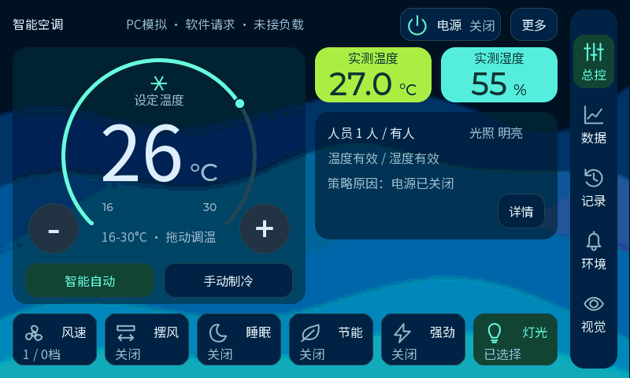

卡片更小，数字更醒目
保留亮绿温度、青色湿度和鲜艳蓝色波浪。两张彩色卡缩小后并排放在一行，最新稿将读数由 32px 放大到 40px。以下均为实际 LVGL 渲染，使用 PC 模拟数据。


最新：两张 148×70px 卡片并排，数字 40px、单位 20px。画布保持 800×480。
| 项目 | 原大卡 | 最新小卡 |
|---|---|---|
| 卡片尺寸 | 每张 308×96px | 每张 148×70px，彩色面积缩小约 65% |
| 排列 | 上下两张 | 一行两张，右侧留白更多 |
| 读数 | 48px | 40px，比一行初稿的 32px 放大 25% |
| 配色 | 亮绿温度、青色湿度 | 继续保留，数字与单位保持深色 |
| 原有功能 | 控制、拖环调温、数据、记录、提醒、视觉与诊断功能保留。 | |
最新稿已于2026-10-15烧录并完整回读校验，用户已确认Flash启动后新界面、调温、触摸和摄像头正常。截图展示模拟值，不能代表此刻开发板上的传感器读数。小卡实现与验证记录